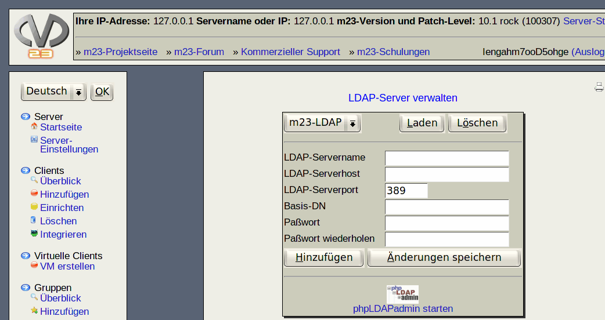

Dieser Dialog gibt Ihnen die Möglichkeit mehrere LDAP-Server zu verwalten, damit diese von den Clients zur Benutzerauthentifizierung genutzt werden können. Zusätzlich kann OpenLDAP auf dem m23-Server installiert und eingerichtet werden.
- Neuen LDAP-Server hinzufügen: Geben Sie dazu in den Eingabefeldern die benötigten Daten an. Der Name des Servers kann dabei unter ''LDAP-Servername'' frei gewählt werden, da er nicht mit dem Hostnamen des Servers identisch sein muß. ''LDAP-Serverhost'' ist hingegen die IP-Adresse oder der voll qualifizierte Hostname des LDAP-Servers. Bedenken Sie dabei, daß bei Verwendung des Hostnamens eine Auflösung durch den Client möglich sein muß. Zusätzlich kann die voreingestellte Portadresse unter ''LDAP-Serverport'' geändert werden. Wird unter ''Paßwort'' und ''Paßwort wiederholen'' ein für den LDAP-Server gültiges Administrator-Paßwort eingegeben, so kann m23 Anmeldungsdaten für die Clients auf dem LDAP-Server speichern. Sind die Paßwortfelder hingegen leer, so können die Anmeldungsdaten ausschließlich von diesem Server gelesen werden. Klicken Sie anschließend auf ''Hinzufügen''.
- Vorhandenen LDAP-Server modifizieren: Wählen Sie zuerst einen LDAP-Server aus der Liste aus und klicken Sie auf ''Laden''. Nun werden die Server-Daten in den Eingabefeldern angezeigt. Modifizieren Sie die gewünschten Werte und klicken Sie anschließend auf ''Änderungen speichern''.
- LDAP-Server löschen: Wählen Sie zuerst einen LDAP-Server aus der Liste aus und klicken Sie dann auf ''Löschen''.
- Einträge des LDAP-Servers bearbeiten: Für das Bearbeiten der Einträge im LDAP greift m23 auf die Oberfläche phpLDAPadmin zurück. Diese kann mit einem Klick auf das dazugehörige Symbol gestartet werden.
root
2017-12-13